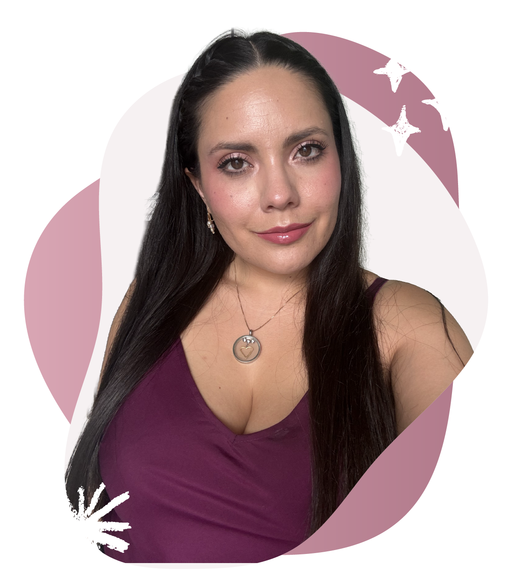
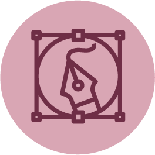
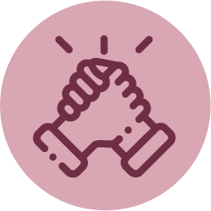
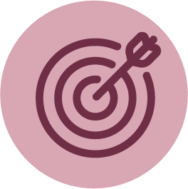
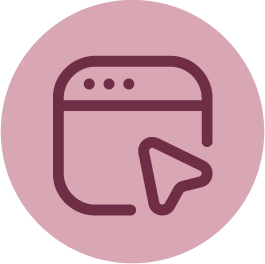

Creando siempre todo el tiempo
Soy Verónica Olvera, diseñadora gráfica. Me encanta darle personalidad a las marcas, explorar el diseño de interfaces y encontrar nuevas formas de contar ideas. También disfruto la dirección creativa y todo lo que implica llevar una idea desde el primer boceto hasta hacerla realidad.
Hablemos→Lo que aporto a cada proyecto
Combino diseño, comunicación y organización para convertir ideas en proyectos claros y bien ejecutados.

Diseño y comunicación visual
Diseño, estrategia y trabajo en equipo.
A lo largo de mi carrera he trabajado en diseño gráfico, branding y marketing: desde crear identidades y campañas hasta desarrollar materiales para distintos canales. También me he involucrado en la coordinación de equipos y proyectos creativos, una parte del trabajo que he descubierto que disfruto tanto como diseñar.

Diseño gráfico
Creación de marcas, identidades y contenido visual.
Marketing B2C
Desarrollo de estrategias y campañas para conectar con las personas.

Liderazgo y gestión
Coordinación de equipos, proyectos y procesos creativos.
Mi recorrido
Formación creativa
Licenciatura en Diseño Gráfico.
Diseño y marketing
Marcas, contenido y campañas B2C.

Coordinación de proyectos
Equipos, clientes y soluciones creativas.

Evolución digital
UX/UI, Project Management y desarrollo web.
En constante evolución
Me gusta seguir aprendiendo y descubrir nuevas formas de crear. Actualmente estoy explorando UX/UI, gestión de proyectos y desarrollo web para ampliar mi manera de conectar diseño y la experiencia digital, además de trabajar con otras personas.